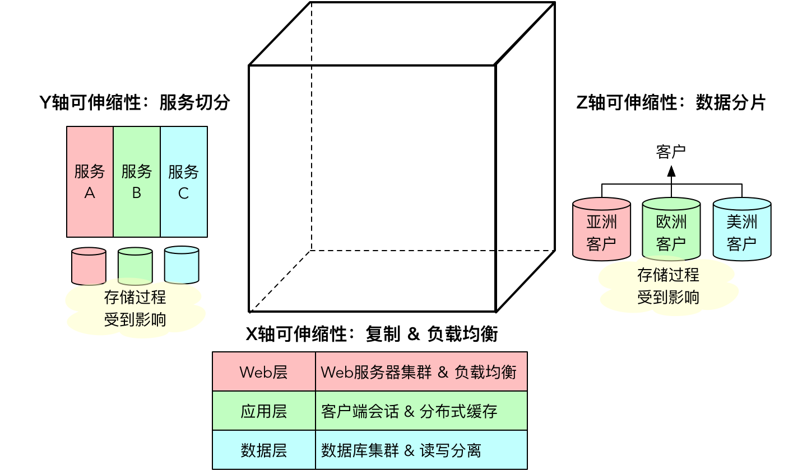
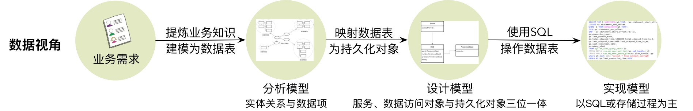

- 001 「战略篇」访谈 DDD 和微服务是什么关系？.md.html
- 002 「战略篇」开篇词：领域驱动设计，重焕青春的设计经典.md.html
- 003 领域驱动设计概览.md.html
- 004 深入分析软件的复杂度.md.html
- 005 控制软件复杂度的原则.md.html
- 006 领域驱动设计对软件复杂度的应对（上）.md.html
- 007 领域驱动设计对软件复杂度的应对（下）.md.html
- 008 软件开发团队的沟通与协作.md.html
- 009 运用领域场景分析提炼领域知识（上）.md.html
- 010 运用领域场景分析提炼领域知识（下）.md.html
- 011 建立统一语言.md.html
- 012 理解限界上下文.md.html
- 013 限界上下文的控制力（上）.md.html
- 014 限界上下文的控制力（下）.md.html
- 015 识别限界上下文（上）.md.html
- 016 识别限界上下文（下）.md.html
- 017 理解上下文映射.md.html
- 018 上下文映射的团队协作模式.md.html
- 019 上下文映射的通信集成模式.md.html
- 020 辨别限界上下文的协作关系（上）.md.html
- 021 辨别限界上下文的协作关系（下）.md.html
- 022 认识分层架构.md.html
- 023 分层架构的演化.md.html
- 024 领域驱动架构的演进.md.html
- 025 案例 层次的职责与协作关系（图文篇）.md.html
- 026 限界上下文与架构.md.html
- 027 限界上下文对架构的影响.md.html
- 028 领域驱动设计的代码模型.md.html
- 029 代码模型的架构决策.md.html
- 030 实践 先启阶段的需求分析.md.html
- 031 实践 先启阶段的领域场景分析（上）.md.html
- 032 实践 先启阶段的领域场景分析（下）.md.html
- 033 实践 识别限界上下文.md.html
- 034 实践 确定限界上下文的协作关系.md.html
- 035 实践 EAS 的整体架构.md.html
- 036 「战术篇」访谈：DDD 能帮开发团队提高设计水平吗？.md.html
- 037 「战术篇」开篇词：领域驱动设计的不确定性.md.html
- 038 什么是模型.md.html
- 039 数据分析模型.md.html
- 040 数据设计模型.md.html
- 041 数据模型与对象模型.md.html
- 042 数据实现模型.md.html
- 043 案例 培训管理系统.md.html
- 044 服务资源模型.md.html
- 045 服务行为模型.md.html
- 046 服务设计模型.md.html
- 047 领域模型驱动设计.md.html
- 048 领域实现模型.md.html
- 049 理解领域模型.md.html
- 050 领域模型与结构范式.md.html
- 051 领域模型与对象范式（上）.md.html
- 052 领域模型与对象范式（中）.md.html
- 053 领域模型与对象范式（下）.md.html
- 054 领域模型与函数范式.md.html
- 055 领域驱动分层架构与对象模型.md.html
- 056 统一语言与领域分析模型.md.html
- 057 精炼领域分析模型.md.html
- 058 彩色 UML 与彩色建模.md.html
- 059 四色建模法.md.html
- 060 案例 订单核心流程的四色建模.md.html
- 061 事件风暴与业务全景探索.md.html
- 062 事件风暴与领域分析建模.md.html
- 063 案例 订单核心流程的事件风暴.md.html
- 064 表达领域设计模型.md.html
- 065 实体.md.html
- 066 值对象.md.html
- 067 对象图与聚合.md.html
- 068 聚合设计原则.md.html
- 069 聚合之间的关系.md.html
- 070 聚合的设计过程.md.html
- 071 案例 培训领域模型的聚合设计.md.html
- 072 领域模型对象的生命周期-工厂.md.html
- 073 领域模型对象的生命周期-资源库.md.html
- 074 领域服务.md.html
- 075 案例 领域设计模型的价值.md.html
- 076 应用服务.md.html
- 077 场景的设计驱动力.md.html
- 078 案例 薪资管理系统的场景驱动设计.md.html
- 079 场景驱动设计与 DCI 模式.md.html
- 080 领域事件.md.html
- 081 发布者—订阅者模式.md.html
- 082 事件溯源模式.md.html
- 083 测试优先的领域实现建模.md.html
- 084 深入理解简单设计.md.html
- 085 案例 薪资管理系统的测试驱动开发（上）.md.html
- 086 案例 薪资管理系统的测试驱动开发（下）.md.html
- 087 对象关系映射（上）.md.html
- 088 对象关系映射（下）.md.html
- 089 领域模型与数据模型.md.html
- 090 领域驱动设计对持久化的影响.md.html
- 091 领域驱动设计体系.md.html
- 092 子领域与限界上下文.md.html
- 093 限界上下文的边界与协作.md.html
- 094 限界上下文之间的分布式通信.md.html
- 095 命令查询职责分离.md.html
- 096 分布式柔性事务.md.html
- 097 设计概念的统一语言.md.html
- 098 模型对象.md.html
- 099 领域驱动设计参考过程模型.md.html
- 100 领域驱动设计的精髓.md.html
- 101 实践 员工上下文的领域建模.md.html
- 102 实践 考勤上下文的领域建模.md.html
- 103 实践 项目上下文的领域建模.md.html
- 104 实践 培训上下文的业务需求.md.html
- 105 实践 培训上下文的领域分析建模.md.html
- 106 实践 培训上下文的领域设计建模.md.html
- 107 实践 培训上下文的领域实现建模.md.html
- 108 实践 EAS 系统的代码模型.md.html
- 109 后记：如何学习领域驱动设计.md.html
- 捐赠
042 数据实现模型
SQL 与存储过程
倘若选择关系型数据库，组成数据实现模型的主力军是 SQL 语句，这是我们不得不面对的现实。毕竟，针对数据建模的实现者大多数担任 DBA 角色，他（她）们掌握的操作数据的利器就是 SQL。正如前面讲解数据分析模型时所说，SQL 语句相当于是操作关系数据表的领域特定语言（Domain Specific Language，DSL），使用 SQL 操作数据表更加直接而自然。
SQL 语句可以很强大，例如它同样提供了数据类型、流程控制、变量与函数定义。同时，还可以使用 SQL 来编写存储过程。从某种程度讲，存储过程也可以认为是事务脚本。如下的存储过程就封装了插入论坛类别的业务过程：
CREATE PROCEDURE np_Forums_InsertCategory
@CategoryName varchar(100),
@CategoryImageUrl varchar(100),
@CategoryPosition int,
@CategoryID int OUTPUT
AS
DECLARE @CurrID int
-- see if the category already exists
SELECT @CurrID = CategoryID
FROM Forums_Categories
WHERE CategoryName = @CategoryName
-- if not, add it
IF @CurrID IS NULL
BEGIN
INSERT INTO Forums_Categories
(CategoryName, CategoryImageUrl, CategoryPosition)
VALUES (@categoryName, @CategoryImageUrl, @CategoryPosition)
SET @CategoryID = @@IDENTITY
IF @@ERROR > 0
BEGIN
RAISERROR ('Insert of Category failed', 16, 1)
RETURN 99
END
END
ELSE
BEGIN
SET @CategoryID = -1
END
在我踏上软件开发道路之初，无论是讲解数据库编程的书籍，还是身边的资深程序员，都在告诉我应当优先考虑编写存储过程来封装访问数据的逻辑。在开发数据库管理系统的时代，这似乎成为了性能优化的箴言，然而这并非事实的真相。Eric Redmond 在《七周七数据库》中就写道：
“存储过程可以通过巨大的架构代价来取得巨大的性能优势。使用存储过程可以避免将数千行数据发送到客户端应用程序，但也让应用程序代码与该数据库绑定，因此，不应该轻易决定使用存储过程。”
我曾经经历过将 Sybase 上的大量存储过程迁移到 Oracle 的噩梦，也曾阅读和维护过长达二千多行的存储过程，真可以说是往事不堪回事，这使得我对存储过程始终抱有戒惧心理。Donald Knuth 于 1974 年在 ACM Journal 上发表的文章 Structured Programming with go to Statements 中写道：
“We should forget about small efficiencies, say about 97% of the time: premature optimization is the root of all evil.”
显然，在我们没有通过性能测试发现性能瓶颈之前就进行的性能优化，可谓“万恶之源”。存储过程确有性能优势，但在没有发现性能瓶颈时，因为性能而选择存储过程，意味着会牺牲代码的可维护性、可读性及可扩展性，带来的结果可能是得不偿失。
在分布式系统下，SQL 存储过程带来的性能优势消散殆尽。单机版的时代已经过去。当数据量与访问量变得越来越大时，存储过程带来的性能提升已经不足以解决性能问题。由于存储过程强耦合于数据库服务器，使得对它的改造受到了诸多限制。例如，根据 AKF 的立方体模型，若要实现系统的可伸缩性（Scalability），可以从三个维度对系统的对应层次进行分割：

评估立方体的三个维度：
- X 轴的可伸缩性代表了数据或服务的复制与负载均衡：数据层采用数据库集群以及读写分离来保证。此时，存储过程不会受到 X 轴分割的影响。
- Y 轴的可伸缩性代表了服务的切分：相当于采用微服务架构。为了避免数据库出现性能瓶颈，应遵循微服务的设计原则，保证每个微服务有专有的数据库。若拆分前的单体架构使用了存储过程，可能包含大量多表关联，当迁移到微服务架构时，可能因为分库的原因，需要对存储过程做出修改和调整。
- Z 轴的可伸缩性代表了数据的分片：这意味着需要针对同类型的数据进行分库，如果 SQL 封装在服务或数据访问对象中，可以通过类似 ShardingSphere 这样的框架对 SQL 进行自动解析，满足分库分表的能力；但如果是存储过程，就会受到影响。
不管是 SQL 语句还是由 SQL 语句构成的存储过程，更擅长表达对数据表和关系的操作。例如一些跨表查询通过 SQL 的 JOIN 或者子查询会显得更加直接，查询条件用 WHERE 子句也极为方便，但在针对复杂的业务逻辑处理，SQL 的表达力就要远远弱于类似 Java 这样的语言了。
SQL 和存储过程的自动化测试一直是一个难题。虽然有的数据库提供了 SQL 单元测试的开发工具，例如 Oracle SQL Developer；但是，单元测试的本质是不依赖于外部资源，SQL 的目的又是访问数据库，这就使得 SQL 单元测试本身就是一个悖论。类似 STK/Unit 这样的工具可以通过编写测试脚本来实现 SQL 的自动化测试，但实际上它是通过编写存储过程来调用测试用例，因而具有存储过程天然的缺陷。SQL 的代码调试也是一个非常大的问题。总之，一旦业务需求变得越来越繁杂，又或者业务需求频繁发生变化，维护 SQL 与存储过程会变得极为痛苦。
如果使用关系数据库，唯一绕不开的 SQL 场景是数据库的创建，以及基础数据的生成。软件系统一旦上线投入到生产环境，最难以更改的其实是数据库，包括数据库样式和已有的数据。无论是升级还是迁移，数据库都是最复杂的一环。为了解决这一问题，就需要对数据库脚本进行版本管理。无论变更是大还是小，是影响数据库样式还是数据，每次变更都应该放在单独的脚本文件中，并进行版本控制。这就相当于为数据库标记了检查点（Checkpoint），使得我们既可以从头开始部署数据库环境，也可以从当前检查点开始升级或迁移。像 FlywayDB 框架就规定每次数据库变更都定义在一个单独的 SQL 文件中，文件名前缀为：V{N}__，N 代表版本号。例如：
即使是一次小的变更，也应该在带有版本号的 SQL 脚本中体现出来，例如上图中的 V19 脚本，其实就是在 t_fields 表中添加了一个新列：
ALTER TABLE t_fields ADD COLUMN format VARCHAR(200);
当然，考虑到升级失败时的回退，还应该提供对应的回退脚本：
ALTER TABLE t_fields DROP COLUMN format;
对象关系映射
我在介绍数据设计模型时提到数据表与对象之间的关系，认为：
一种简单直接的方法是建立与数据表完全一一对应的类模型。
这其实是数据模型驱动设计的核心原则，即它是按照数据表与关系来建模的，因此在数据模型驱动设计中，数据表与对象的映射非常简单：数据表即类型，一行数据就是一个对象。映射的持久化对象是一个典型的贫血模型。如果针对关系数据库建立了数据模型，却在定义对象类型时采用了面向对象的设计思想，那就不再是数据模型驱动，而是领域模型驱动。
数据表与对象之间的映射，主要体现在概念上的一一对应，对于关系的处理则有不同之处。Jimmy Nilsson 认为：
“在关系数据库中，关系是通过重复的值形成的。父表的主键作为子表的外键重复，这就有效地使子表的行‘指向’它们的父亲。因此，关系模型中的一切事物都是数据，甚至关系也是数据。”
在类模型中，这种主外键关系往往通过类的组合或聚合来体现，即一个对象包含了另外一个对象或对象的集合。注意，这里的聚合是面向对象设计思想中的概念，并非领域驱动设计中的聚合。因此，当数据访问对象从数据表中查询获得返回结果时，需要通过映射器来实现从数据表的行到对象的转换。
整体而言，当我们面对关系数据库进行数据建模时，数据实现模型实际上得到了简单处理，所有业务都通过服务、数据访问对象与持久化对象三者之间的协作来完成，三者各司其职：
- 持久化对象就是数据表的映射，并合理处理数据表之间的关系；
- 数据访问对象负责访问数据库，并完成返回结果集如 ResultSet 或 DataSet 到持久化对象的映射；
- 服务利用事务脚本或者存储过程来组织业务过程。
当然，持久化对象与数据访问对象的组合可以有多种变化，我在前面讲解数据设计模型时已经介绍，这些变化对应的恰好是 Martin Fowler 在《企业应用架构模式》中总结的四种数据源架构模式：
- 表入口模式
- 行入口模式
- 活动记录
- 数据映射器
这种简单的职责分配可以让一个不具备面向对象设计能力的开发人员快速上手，尤其是在 ORM 框架的支持下，框架帮助开发人员完成了大部分工作：生成持久化对象，封装通用的数据访问行为，利用元数据或配置完成表到类的映射。留给开发人员要做的工作很简单，就是编写 SQL，然后在服务中采用事务脚本的方式实现业务过程。如果业务过程也用存储过程或者 SQL 实现，则数据模型驱动设计的实现模型就只剩下编写 SQL 了。这些工作甚至 DBA 就可以胜任。
如果对比数据设计模型与数据实现模型，我们发现二者没有非常清晰的界限。设计过程实际上取决于对 ORM 框架的选择。
- 如果选择 MyBatis，则遵循数据映射器模式，为持久化对象建立 Mapper，并通过 Java 注解或 XML，配置数据表与持久化对象之间的映射及对 SQL 的内嵌；
- 如果选择 jOOQ，则遵循活动记录模式，利用代码生成器创建具有数据访问能力的持久化对象，采用类型安全的 SQL 编写访问数据的逻辑代码；
- 如果选择 Spring Data JPA，则是数据映射器与资源库模式的一种结合，通过框架提供的Java注解确保实体（即这里的持久化对象）与数据表的映射，编写资源库（即数据访问对象）对象，并通过继承 CrudRepository 类实现数据库的访问。
一旦选定了框架，其实就开始了编码实现。只需要确定业务过程，就可以创建服务对象，并以过程式的方式实现业务逻辑，若需要访问数据库，就通过数据访问对象来完成查询与持久化的能力。
数据模型驱动设计的过程
显然，在数据模型驱动设计的过程中，设计模型与实现模型皆以分析模型为重要的参考蓝本。整个数据模型驱动设计的重头戏都压在了分析模型上。通过对业务知识的提炼，识别出实体和数据表，并正确地建立数据表之间的关系成为了数据建模最重要的工作。它是数据模型驱动设计的起点。因此，一个典型的数据模型驱动设计过程如下图所示：

你可以说这是没有太多设计含金量的过程，但对于简单的业务系统而言，无疑这是简单高效的设计方法。除了数据库性能优化与数据库设计范式之外，它对团队开发人员几乎没有技术门槛，只需掌握三个技能：一门语言的基本语法和编程技巧、一个 ORM 框架的使用方法及基本的 SQL 编写能力——就这三板斧，足矣！这也正是为何数据模型驱动设计能够大行其道的主要原因，无他，门槛低而已。
© 2019 - 2023 Liangliang Lee. Powered by gin and hexo-theme-book.